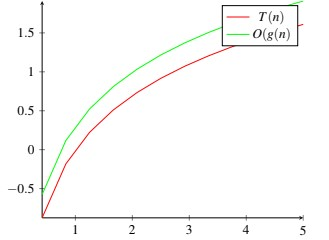
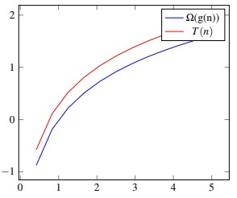

La complessità computazionale (di calcolo) di un algoritmo è una misura della sua efficienza e può essere:
Tipicamente per stimare la complessità di un algoritmo si considera la sola complessità temporale T(n), dove n
rappresenta la dimensione dei dati ricevuti in input.
Le ipotesi da tenere in considerazione nel calcolo della complessita’ sono:
INDIPENDENZA DAL SISTEMA DI ELABORAZIONE
l efficienza di esecuzione sicuramente dipende dalla macchina su cui l algoritmo viene eseguito, ed in particolare dipende dal processore, dal tipo di architettura (CISC/RISC), dal compilatore stesso (la cui traduzione in codice macchina può essere più o meno efficiente). Di conseguenza, la valutazione della complessità dell algoritmo non può dipendere dall architettura del calcolatore;
DIPENDENZA DAI DATI IN INGRESSO
- DIPENDENZA DAL VALORE DATI IN INGRESSO: il tempo di esecuzione varia al variare del valore assunto dati
di input.
- DIPENDENZA DALLA DIMENSIONE DEI DATI DI INGRESSO: il tempo di esecuzione spesso dipende dalla
quantita’ (numero) dei dati ricevuti in input.
Vista l’indipendenza dall’architettura del sistema, nel valutare la complessita’ temporale T(n), si assume che venga
utilizzato il modello computazionale RAM - (Ramdom Access Machine), caratterizzato da:
Inoltre, vista la dipendenza dalla dimensione dei dati di ingresso, nel calcolo T(n) si considerano tre casi possibili: CASO MIGLIORE, corrispondente alla configurazione dei dati di input che danno luogo al valore minimo di T(n); CASO PEGGIORE, corrispondente alla configurazione dei dati di ingresso che danno luogo al valore massimo di T(n); CASO MEDIO, che corrisponde al comportamento medio di T(n) al variare della configurazione dei dati di ingresso. Ci sono algoritmi in cui il tempo T(n) e’ indipendente dai dati di ingresso: per quest’ultimi T(n) avra’ lo stesso valore nel caso migliore, peggiore e medio.
Nell’analisi della complessita’ temporale T(n), si vuole verificare il comportamento dell’algoritmo facendo riferimento ad
una dimensione n variabile e non per una prefissata dimensione n.
Poiche’ T(n) cresce al crescere di n, quello che si fa e’ un’ANALISI AL LIMITE, cioe’ si studia il comportamento
dell’algoritmo per valori di n sufficientemente grandi.
Si parla, in tal senso, di NOTAZIONE ASINTOTICA, dal termine asintoto, utilizzato in matematica per indicare una curva
alla quale una data funzione ci si avvicina senza mai toccarla (analisi al limite).
Per poter affermare che un algoritmo ha un certo comportamento asintotico, bisogna verificare il suo andamento sia nel
caso migliore che nel caso peggiore.
T(n) e’ un O(g(n)), e cioe’ g(n) e’ un limite asintotico superiore di T(n), se:
In altre parole, T(n) e’ un O(g(n)) se esistono una costante c e un numero n0 positivi, tali che per ogni n ≤ n0, T(n) si trova al di sotto della funzione c · g(n). Poiche’ per ogni funzione T(n) possono esistere piu’ funzioni O(g(n)), si considerera la g(n) piu’ vicina a T(n), ossia la piu’ piccola delle g(n).
T(n) e’ un Ω(g(n)), e cioe’ g(n) e’ un limite asintotico inferiore di T(n), se:
In altre parole, T(n) e’ un Ω(g(n)) se esistono una costante c e un numero n0 positivi, tali che per ogni n ≤ n0, T(n) si
trova al di sopra della funzione c · g(n).
Se esistono piu’ funzioni Ω(g(n)) per T(n), si considera la piu’ grande delle g(n).
T(n) e’ un Θ(g(n)), e cioe’ g(n) e’ un limite asintotitico stretto di T(n), se:

In altri termini, T(n) e’ un Θ(g(n)) se e’ contemporaneamente un O(g(n)) e un Ω(g(n)). Pertanto, T(n) e’ un Ω(g(n)) se esistono due costanti c1 ec2 e un numero n0 positivi, tali che per ogni n ≤ n0, T(n) si trova al di sopra della funzione c1 · g(n) al di sotto della funzione c2 · g(n)
Complessita’ costante O(1)
Complessita’ logaritmica O(log2n)
Complessita’ lineare O(n)
Complessita’ quadratica O(n2)
Complessita’ polinomiale O(nk), k>1
Complessita’ esponenziale O(kn)
Complessita’ fattoriale O(n!)